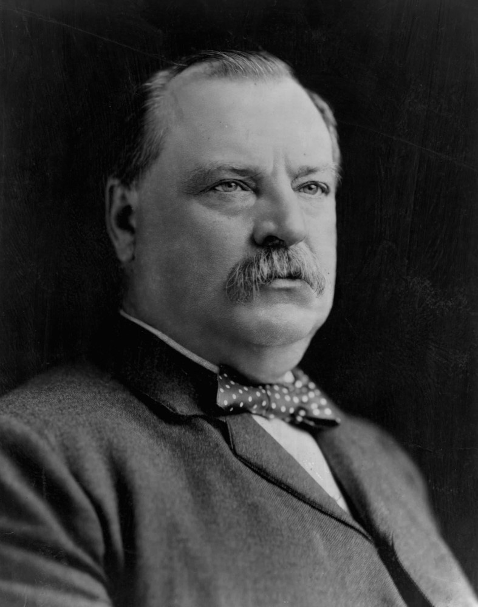

Projects that I have worked on.
Song List Filtering - CS400
This project took a csv file of various songs and allowed user filtering and interacting.
Link to Video DemonstrationCampus Navigator - CS400
This project combined HTML, JavaScript, and WebServers to create a Campus Naviator with two main features.
- Shortest Path Between Buildings
- List of Buildings Along Longests Path from Building
Papers that I have worked on.
History 154 Final Paper
This paper examines 1897 Legislation that was vetoed by Grover Cleaveland that would require immigrants to take a literacy test.
Zoology 275 Reading Response 1
This paper is written in response to a Scholarly Paper, Scientific Article, and Press Release relating to the the decrease in dinosaur biodiversity prior to their ultimate demise.
Link to Read Full Paper